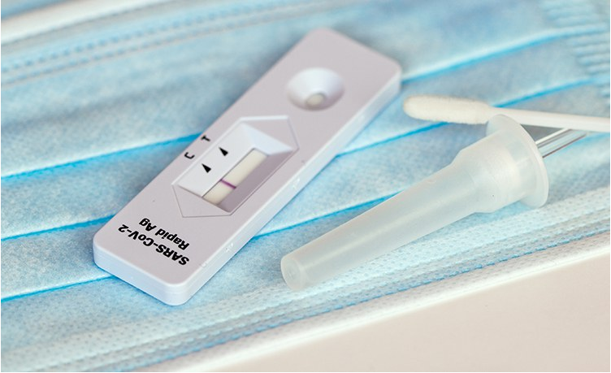

Home
Informações
Contato
Notícias recentes
Covid-19
Venha se informar sobre o Covid-19
Vamos Lá
Ultimas notícias sobre Covid-19 no mundo!
Cuiabá e Palmas são as últimas capitais a começar a vacinação infantil
Clique aqui para ler
Seis estados registram crescimento da internação de crianças e adolescentes
Clique aqui para ler
Pedidos de auxílio-desemprego nos EUA sobem com alta de casos de Covid-19
Clique aqui para ler
ANS aprova inclusão de teste rápido para diagnóstico da Covid-19 no rol de coberturas obrigatórias

Clique aqui para ler